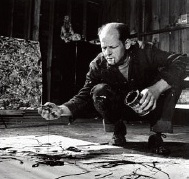

Jackson Pollock (1912-1956), “damlatma” resimleriyle ünlüdür. Dev tuvallere boyayı boşaltarak, sıçratarak ve damlatarak – “hareketli boyama” olarak etiketlendirdiği bir yöntem – resimler üretti. Sanat eserlerinin bir takım ikincil konuların temsillerinden ziyade kendi başlarına bağımsız nesneler olarak değerlendirilmesi gerektiğini iddia eden Pollock, resimlerinin hiçbir şey hakkında olmadığı, en saf, en bağımsız formlarda resimler olduğunda ısrar etti.

Pollock, Stella May McClure ve LeRoy Pollock’un beşinci ve en küçük oğlu olarak Wyoming, Cody’de doğdu. Çocukluğu California ve Arizona’da geçti ve Los Angeles’ta El Sanatları Lisesi’ne devam ederken modern sanatla tanıştırıldı.
1929’da Pollock, Sanat Öğrencileri Ligi’ne kaydolduğu ve bölgeci ressam Thomas Hart Benton ile çalıştığı New York’a taşındı. Pollock’un erken dönem eserleri, Albert Pinkham Ryder ve Meksikalı duvar ressamları Jose Clemente Orozco ve David Alfaro Siqueiros’un etkilerini taşıdı. Büyük Buhran yılları sırasında Pollock, WPA Federal Sanat Projesi tarafından görevlendirildiği 1935 yılına kadar yoksulluk içinde yaşadı. 1937’de Pollock, alkolizmden dolayı psikiyatri tedavisi gördü. Terapideyken çizimleri, hastayı Jungçu psikoloji ile tanıştıran terapistler tarafından analiz edildi. Ondan sonra Pollock, rüya sembolleri ve bilinçaltına takıntılı hale geldi.
1945’te Pollock, sanatçı Lee Krasner ile evlendi. Çift, Pollock’un iki yıl sonra Tam Beş Kulaç adlı ilk damlatma resmini yaptığı Long Island, East Hampton’a taşındı. Görünürde gelişigüzel olmasına rağmen damlatma resimleri, büyük bir dikkat ve kafa yorma ile yaratıldılar. Zemine kesilmemiş tuvali yaydıktan sonra Pollock, sopalarla, hindi yağlarıyla ve yoğun boyalı fırçalarla tuvalin üzerine boyayı sıçrattı. Tuvali dikkatlice kaldırarak, dengeli bir kompozisyon elde edene kadar boyanın ileri doğru akmasına izin verdi. Boya kuruduğunda, tuvali kesti ve onu çerçeveledi.
Hareketli boyamada Pollock, kendisinin dışında herhangi bir şeyle bağı olmayan saf resim yaratabileceği bir yöntem keşfetti. Niyetini açıklığa kavuşturmak için, eserlerine başlıklar yerine sayılar vermeye başladı, böylece izleyenler konudan çok resme odaklanabilirlerdi. Pollock’a göre resim yapmanın fizikî eylemi, bitmiş ürün kadar önemliydi. Bu anlamda 1950’ler ve 1960’larda uygulamalı sanat ve oluşumlara dâhil olan sanatçıların önemli bir öncüsüydü.
1951’de Pollock, tekrar yoğun şekilde içmeye başladı. Sağlığı ve dayanma gücü tükendikçe sanat dünyasında tutunduğu yeri korumak için mücadele etti. 1956 yazında Pollock, arabayla bir ağaca çarptı ve orada öldü.